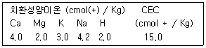

유기농업산업기사 (2007-08-05 기출문제)
1과목: 재배원론
1. 식물 호르몬인 옥신의 농업적 이용에서 효과가 가장 적은 것은?
- 발근
- 적과
- 제초
- 휴면타파
(정답률: 알수없음)

2. 작물에 탄산시비를 하는 경우 그 효과로 옳은 것은?
- 광합성 촉진
- 호흡작용 감소
- 전류작용 촉진
- 병해충 방제
(정답률: 알수없음)
3. 엽면증산이나 증발작용을 억제하고자 할 경우 살포하는 약제는?
- NAA
- IBA
- OED
- ABA
(정답률: 알수없음)
4. 하우스재배에서 가장 문제가 되는 것은?
- 일조부족
- 과습
- 염류집적
- 잡초 발생
(정답률: 알수없음)
5. 종자의 분류 중 식물학상의 종자에 해당하는 것은?
- 벼
- 메밀
- 콩
- 복숭아
(정답률: 알수없음)
6. 토양의 과습에 의한 습해의 직접적인 피해는?
- 양분흡수 저해
- 호흡장해
- 유해가스 피해
- 유기산 피해
(정답률: 알수없음)
7. 벼 이앙재배시 육묘의 필요성에 해당 되지 않는 것은?
- 토지 이용도의 증대
- 재배 방지
- 추대 방지
- 종자 절약
(정답률: 알수없음)
8. Vavilov의 작물 기원 중심지가 아닌 곳은?
- 아시아 동남부
- 지중해 연안
- 유럽북부
- 필리핀군도 부근
(정답률: 알수없음)
9. 다음 중 파종, 이식의 작업이 편리하고 생육도 좋아지는 토양 입단의 크기로 가장 적당한 것은?
- 약 0.01~ 0.1mm
- 약 0.2~ 0.5mm
- 약 1 ~ 5mm
- 약 6 ~ 10mm
(정답률: 알수없음)
10. 적심의 효과가 크게 나타나는 작물은?
- 배추
- 무
- 담배
- 조
(정답률: 알수없음)
11. 다음 중 장일식물인 것은?
- 벼
- 시금치
- 국화
- 코스모스
(정답률: 알수없음)
12. 봄철 과수원의 개화기에 동해 예방을 위한 응급대책으로 옳지 않은 것은?
- 방풍림을 조성한다.
- 수증기가 함유된 연기를 발산시킨다.
- 야간에 짚이나 고형물을 태운다.
- 저녁에 충분히 관개한다.
(정답률: 알수없음)
13. 벼 품종개량에서의 고정개체들을 얻을 수 있어 육종년한을 단축시킬 수 있는 것은?
- 계통육종
- 집단육종
- 세포융합
- 약배양
(정답률: 알수없음)
14. 방사선 중 가장 현저한 생물적 효과를 가지고 있는 것은?
- 알파선
- 베타선
- 감마선
- 50Fe
(정답률: 알수없음)
15. 기상생태형을 구성하는 성질이 아닌 것은?
- 굴광성
- 감광성
- 감온성
- 기본영양생장성
(정답률: 알수없음)
16. 상적 발육의 이론을 단계발육설로 가장 먼저 제창한 사람은?
- Lysenko
- Garner
- Went
- Vavilov
(정답률: 알수없음)
17. 작물의 분화과정에서 첫 단계에 해당하는 것은?
- 고립단계
- 유전적 변이 발생단계
- 순화
- 적응형
(정답률: 알수없음)
18. 환상박피 와 관련이 있는 것은?
- C / N율
- T / R율
- R / S율
- G - D균형
(정답률: 알수없음)
19. 요소(질소성분 46%)를 10a당 성분량으로 10Kg을 시용하고자 할 때 실중량은?
- 4.6Kg
- 21.7Kg
- 46.0Kg
- 460.0Kg
(정답률: 알수없음)
20. 한해(가뭄피해)에 견디는 작물의 특성이 아닌 것은?
- 세포가 작아서 수분이 적어져도 원형질의 변형이 적다.
- 저수능력이 크고, 다육질이다.
- 잎이 작고, 왜소하다.
- 뿌리의 분포가 얕다.
(정답률: 알수없음)
2과목: 토양비옥도 및 관리
21. 다음 중 토양조사의 주요 목적은 무엇인가?
- 토지 가격의 선정
- 합리적인 토지 이용
- 비료 종류와 시비방법 결정
- 수자원 개발 지표 선정
(정답률: 알수없음)
22. 토양의 양이온치환용량이 커지면 1차적으로 어떤 현상이 나타나는가?
- 토양산도가 감소된다.
- 통기성이 향상된다.
- 보비력이 향상된다.
- 보수력이 향상된다.
(정답률: 58%)
23. 다음 중 유기물이 토양 특성에 미치는 영향 중에서 가장 거리가 먼 사항은?
- 토양 입단구조를 발달시킨다.
- 보수성을 증대시킨다.
- 염기치환용량을 증대시킨다.
- 완충능을 감소시켜 양분을 유효화 시킨다.
(정답률: 알수없음)
24. 시설재배지 토양에서 흔히 나타나는 문제점이 아닌 것은?
- 염류집적
- 특정 성분의 양분결핍
- 연작장해
- 토양의 침식
(정답률: 알수없음)
25. 염류가 집적된 시설재배지 토양에서 염류를 제거하는 방법으로 적절하지 않은 것은?
- 황화합물을 사용하여 토양의 PH를 낮춰준다.
- 심근이면서 근분발달이 좋은 작물을 심어 염류를 흡수한 후 식물 전체를 제거한다.
- 담수하여 토양에 집적된 염류를 근권 아래로 용탈시킨다.
- 심경을 실시하여 토양의 물리성과 화학성을 개선한다.
(정답률: 알수없음)
26. 일반 토양과 달리 간척지, 오염토양 및 시설재배지에서 특별히 고려해야 할 수분포텐셜은?
- 중력포텐셜
- 압력포텐셜
- 삼투포텐셜
- 매트릭포텐셜
(정답률: 알수없음)
27. 유류오염토양의 생물 토양복원에서 필수검토 대상 토양특성이 아닌 것은?
- 토양수분함량
- 토양산도
- 무기양분함량
- 토양결지성
(정답률: 알수없음)
28. 다음에서 토양중의 유효수분을 가장 잘 설명한 것은?
- 최대용수량에서 최소 용수량을 뺀 것
- PF 1.8에서 2.7까지의 것
- 포장용수량에서 위조점의 수분량을 뺀 것
- 중력수와 최대 용수량 사이의 것
(정답률: 알수없음)
29. 다음표에 표시된 치환성염기와 CEC를 가지는 토양의 염기포화도는?

- 100%
- 87%
- 73%
- 80%
(정답률: 알수없음)
30. 논벼에 필수 다량 성분으로 도복방지와 도열병 예방에 효과가 있다고 알려져 있는 원소는?
- Ca
- Si
- Mg
- Mn
(정답률: 알수없음)
31. 다음 중 단위 그램당 표면적이 가장 큰 것은?
- 모래
- 자갈
- 미사
- 점토
(정답률: 알수없음)
32. 일반토양에서 치환침입력이 가장 큰 이온은?
- H+
- NH4+
- Mg2+
- Na+
(정답률: 알수없음)
33. 다음 중 공중질소를 고정하는 미생물이 아닌 것은?
- Clostridium 속
- Azotobacter 속
- Rhizobium 속
- Fungi 속
(정답률: 알수없음)
34. 토양의 생성에 관여하는 다음의 풍화작용 중에서 성질이 다른 하나는?
- 산화작용
- 가수분해
- 수화작용
- 침식작용
(정답률: 55%)
35. 부식의 기능들을 올바르게 나열한 것은?
- 양이온교환용량 증대, 인산 집적량 증대, 보수력 증대
- 인산 집적량 증대, 보수력 증대, 완충능 증대
- 보수력 증대, 완충능 증대, 유해물질의 독성 감소
- 완충능 증대, 유해물질의 독성 감소, 가소성과 응집력 증대
(정답률: 알수없음)
36. 탄질률이 높은 유기물질이 토양에 첨가될 때 일어나는 현상으로 옳지 않은 것은?
- 고등식물과 미생물 간에 질소의 경쟁이 일어나 질소의 결핍을 초래할 수 있다.
- 탄질률이 높은 유기물질에 무기질소를 가하면 토양 유기물의 유지에 이롭다.
- 탄질률이 높은 유기물질에 대한 분해작용이 일단 평형을 이루면 토양의 탄질률은 약 10:1이 된다.
- 질산화작용에 의한 질산축적이 일어나지 않는다.
(정답률: 알수없음)
37. 토양의 유기물 유지방법과 그 필요성을 설명한 것으로 옳지 않은 것은?
- 모든 식물의 유체는 토양으로 되돌려 주어야 한다.
- 땅을 자주 갈아주어 미생물의 활동을 도와준다.
- 토양의 침식을 막아야 한다.
- 높은 수량을 올릴 때 더 많은 식물유체나 퇴구비가 토양에 환원될 수 있다.
(정답률: 알수없음)
38. 토양미생물이 고등식물에 끼치는 유익작용이 아닌 것은?
- 암모니아 화성작용
- 미생물간의 길항작용
- 유리질소 고정작용
- 질산염의 환원
(정답률: 알수없음)
39. 논토양의 토층 분화를 가장 잘 설명한 것은?
- 식물 잔재가 모여서 부식층이 생기는 현상
- 용탈층과 집적층이 생기는 현상
- 암석의 상부가 풍화되어 토양층이 생기는 것
- 산화층과 환원층이 구분되는 현상
(정답률: 알수없음)
40. 산성토양에 석회를 시용할 경우 석회소요량의 결정은 어디에 의하는가?
- 활산도에 의해 결정
- 토성에 의해 결정
- 유기물함량에 의해결정
- 치환산도에 의해결정
(정답률: 알수없음)
3과목: 유기농업개론
41. 국제유기농업규격인 Codex의 유기식품의 생산, 가공, 표시, 유통에 관한 가이드라인은 어느 기관에서 정한 것 인가?
- FAO
- WHO
- UNICEF
- FAO / WHO의 합동위원회
(정답률: 77%)
42. 다음 중 유기농업에서 사용이 가능한 자재가 아닌 것은?
- 나무재
- 유안
- 소석회
- 자연암석분말
(정답률: 알수없음)
43. 다음 중 식물영양진단의 한 방법으로 사용되는 엽색진단법의 설명으로 틀린 것은?
- 색의 변화와 척도로서 색의 삼원색을 이용
- 아세톤과 같은 추출액을 이용하여 잎을 용출하여 chlorophyll 의 농도를 측정
- 잎에 빛을 투과시키는 방법
- NO3 함량을 측정
(정답률: 80%)
44. 다음 중 연작의 피해가 가장 큰 작물은?
- 옥수수
- 양파
- 무
- 수박
(정답률: 90%)
45. 유기축산에서 가축관리 축사에 깔짚으로 사용하지 않는 것은?
- 볏짚
- 보리짚
- 자갈
- 톱밥
(정답률: 알수없음)
46. 품종의 퇴화원인이 아닌 것은?
- 자연교잡
- 돌연변이
- 영양번식
- 새로운 유전자형의 분리
(정답률: 알수없음)
47. 다음 중 원예작물에서 문제시되는 진딧물, 온실가루이, 잎굴파리류 등을 방지하기 위한 천적은?
- 굴파리
- 잎응애
- 가루깍지벌레
- 기생벌
(정답률: 알수없음)
48. 유기농 수도작에서 써레질에 대한 설명으로 틀린 것은?
- 써레질 시기는 토양조건에 따라 다르다.
- 심한 습답과 같이 토양의 환원상태가 강하여 뿌리썩음현상이 발생하기 쉬운 논에서는 써레질의 횟수를 늘린다.
- 사양토나 양토의 경우에는 이앙 2~3일 전에 하여야 이앙시 알맞게 굳게 된다.
- 중모는 이앙 당시 초장이 13~18cm가 되므로 약간 덜 굳혀도 흙속에서 파묻히지 않지만 어린모는 초장이 짧아 거의 묻히게 되므로 굳히기를 알맞게 해주어야 모내기 상태가 양호하게 된다.
(정답률: 알수없음)
49. 다음 중 볏과식물의 특성이 아닌 것은?
- 볏과식물은 콩과식물, 배추과식물에 비하여 총건물 생산량이 많다.
- 볏과식물은 축산업과 함께 우수한 유기물을 토양에 환원할 수 있다.
- 볏과식물은 콩과식물, 서류, 채소류에 비하여 C/N율이 낮다,
- 우리나라에서 재배되는 식용작물 중 볏과식물은 대부분 1년생 또는 월년생 작물이 많다.
(정답률: 알수없음)
50. 우리나라에서 생산되는 유기농산물의 종류 중에서 재배면적이 가장 넓은 것은?
- 과실류
- 곡류
- 서류
- 채소류
(정답률: 알수없음)
51. 병저항성 품종의 가장 큰 장점은?
- 지력을 유지, 증진하는 효과가 있다.
- 천적을 제거하는 효과가 있다.
- 병원균의 레이스나 해충의 바이오타입 분화를 방지한다.
- 무농약 재배를 할 수 있다.
(정답률: 알수없음)
52. 다음 중 흰가루병에 의한 피해가 비교적 적은 작물은?
- 오이
- 딸기
- 벼
- 장미
(정답률: 알수없음)
53. 유기농업용 종자의 육종법으로 적당하지 않은 것은?
- 1대잡종육종
- 생물공학적 육종
- 영양계선발
- 순환선발
(정답률: 알수없음)
54. 오리농법의 주된 목적은 무엇 인가?
- 친환경 이미지 고양으로 고미가 정책
- 오리에 의한 제초
- 자연친화적 농법의 도입으로 농촌 이미지 개선
- 오리에 의한 병해 방제
(정답률: 91%)
55. 유기농업을 실천하려는 농가에서 좋은 볍씨로 보기가 어려운 것은?
- 낱알이 충실한 종자
- 유전적으로 순수한 종자
- 보관시 수분함량이 15% 이하인 종자
- 종자보급소에서만 보급하는 개량된 종자
(정답률: 알수없음)
56. 유기수도작 재배에서 모의 구비조건으로 틀린 것은?
- 줄기가 가늘고 잎이 작은 것
- 발근력이 강하며 이앙 후 활착이 빠른 것
- 적당한 며령에 도달해 있을 것
- 병충해가 없고 영양이 적당하며 균일하게 자란 것
(정답률: 알수없음)
57. 유기축산물 생산을 위한 유기배합사료 제조용자재 중 단미사료로 분류되지 않는 것은?
- 쌀겨
- 채종유
- 석회석 분말
- 벤토나이트
(정답률: 알수없음)
58. 토양침식을 줄이기 위한 토양관리방법으로 적합하지 않은 것은?
- 대상재배
- 등고선재배
- 초생재배
- 관개재배
(정답률: 62%)
59. 다음 중 화아분화에 가장 큰 영향을 미치는 외적 요인으로만 짝지어진 것은?
- 일장, 온도
- 일장, 유전소실
- 온도, 식물호르몬
- 온도, C/N율
(정답률: 알수없음)
60. 다음 중 윤작의 효과와 관련이 없는 것은?
- 잔비량을 감소시켜 지력을 유지, 증진시킨다.
- 토지 이용률을 높인다.
- 작물생산의 위험을 분산시킨다.
- 노력의 시기적인 집중화를 경감하여 노력 분배를 합리화 한다.
(정답률: 64%)
4과목: 유기식품 가공 유통론
61. 유기식품재료라 함은 식품의 제조 가공에 사용한 원재료 중 인증을 받은 유기농산물 함량이 최소한 몇 % 이상 포함되어야 하는가?
- 100%
- 95%
- 90%
- 80%
(정답률: 알수없음)
62. 다음 중 일반적인 CA저장에 대한 설명으로 옳은 것은?
- CO2를 높이고 O2를 낮춘 저장고에서 저장하는 방법
- CO2를 낮추고 O2를 높인 저장고에서 저장하는 방법
- CO2와 O2를 모두 높인 저장고에서 저장하는 방법
- CO2와 O2를 모두 낮춘 저장고에서 저장하는 방법
(정답률: 알수없음)
63. 대장균군의 정성시험법 중 BGLB 배지에서 가스가 발생한 것을 EMB 한천평판배지로 분리 배양한 후 콜로니를 관찰하는 과정이 있는 시험은?
- 추정시험
- 확정시험
- 완전시험
- 한도시험
(정답률: 알수없음)
64. 홍조류를 뜨거운 물 또는 뜨거운 알칼리성 수용액으로 추출한 다음 정제하여 얻어지는 증점제는?
- 삭카린나트륨
- 카라키난
- 안식향산나트륨
- 식용색소 황색 제5호
(정답률: 60%)
65. 우유를 130~150 C에서 0.5초 내지 5초간 살균하는 방법은?
- LTLT
- LTST
- HTST
- UHT
(정답률: 알수없음)
66. 지질 산화가 우려되는 건조식품의 포장재질 설계에 가장 적합한 포장 재료는?
- 나일론
- 알루미늄 호일
- 폴리염화비닐
- 폴리에스테르
(정답률: 알수없음)
67. 식품의 위해요소 중 유기식품과 일반식품에 있어서 가장 큰 차이를 나타내는 화학적 위해요소는?
- 호기성 고초균
- 해충의 잔재물
- 잔류농약 성분
- 수분활성도
(정답률: 94%)
68. 우리나라의 농산물 유통경제의 특성과 거리가 먼 것은?
- 공급자는 영세하고 다수이다.
- 지역적 특화, 산지 분산적이다.
- 표준화, 규격화, 등급화가 용이하다.
- 일상 필수품으로 구매 빈도가 높다.
(정답률: 82%)
69. 플라스틱 포장재료를 선정하기 위해 고려할 사항으로 잘못된 것은?
- 플라스틱필름용기는 알루미늄박과 같이 기체를 투과시키지 않으므로 호흡이 필요한 식품에는 적합 하지 않다.
- 플라스틱필름의 경우 열접착성을 고려하여야 한다.
- 자동포장기의 작업능률을 고려하여 slip성이 적절한 재료를 선정한다.
- 상품가치가 높은 인쇄를 위하여 인쇄적성이 좋은 재료를 선택한다.
(정답률: 알수없음)
70. 다음 중 식품의 냉동부하의 계산에 필요한 항목이 아닌 것은?
- 식품의 냉동 온도
- 물의 비열
- 식품의 중량
- 물의 동결잠열
(정답률: 알수없음)
71. 고전장펄스살균에 대한 설명으로 옳은 것은?
- 살균효과는 유전파괴에 의한 세포막 파괴에 의한다.
- 고전장펄스살균의 경우 포자의 사멸은 영양 세포의 사멸보다 쉽게 일어난다.
- 고전장 펄스에 사용되는 전압은 1~5Kv/cm 이다.
- 미생물 영양세포의 임계 전기장 세기는 5Kv/cm로 알려져 있다.
(정답률: 17%)
72. 감의 떫은 맛을 제거하기 위하여 사용하는 탈삽 방법이 아닌 것은?
- 온탕탈삽법
- 알코올탈삽법
- 탄산가스탈삽법
- 유황탈삽법
(정답률: 알수없음)
73. 다음 중 육제품 훈연의 주요 목적이 아닌 것은?
- 지방 산화의 방지
- 육색의 고정
- 변색 촉진
- 향미의 증진
(정답률: 알수없음)
74. 다음 중 버섯의 독성성분은?
- solanine
- carotenoid
- muscarine
- patuline
(정답률: 알수없음)
75. 다음 중 간접마케팅의 특징에 대한 설명으로 옳은 것은?
- 유통기능이 생산자나 소비자에 의하여 수행된다.
- 유통기능이 전담하는 유통기관이 가능한 배제되면서 유통된다.
- 유통기능이 분업적으로 특화된 유통관계에 의하여 수행된다.
- 협동조합운동이나 산지직거래방식이 이에 해당된다.
(정답률: 알수없음)
76. 유기가공식품 생산 및 취급시 와인 제품에 사용이 가능한 첨가물은?
- 이산화황
- 탄산나트륨
- 아라비아검
- 황산칼슘
(정답률: 50%)
77. 다음 중 농산물가격의 농가수취율이 가장 낮은 품목은?
- 쌀
- 배추
- 사과
- 돼지고기
(정답률: 알수없음)
78. 다음 중 blanching이 이용되는 경우가 아닌 것은?
- 효소를 불활성화할 때
- 보다 연한 조직으로 만들 때
- 완전 멸균을 할 때
- 통조림 공정을 위한 예비 공정을 할 때
(정답률: 알수없음)
79. 식중독을 발생시키는 생물학적 위해요인에 해당하지 않는 것은?
- 곰팡이
- 세균
- 농약
- 곤충
(정답률: 알수없음)
80. 다음 중 곰팡이가 생산하지 않는 것은?
- 아플라톡신
- 지랄레논
- 테트라도톡신
- 오크라톡신
(정답률: 알수없음)